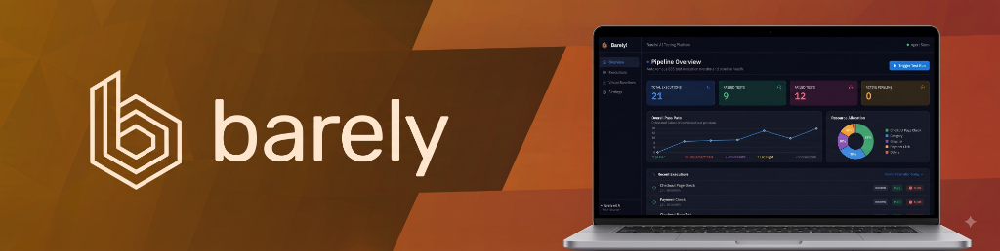

You define the test intent and assertions in natural language — Barely's autonomous agent figures out the exact steps, elements, and browser actions to achieve and verify it.

From human intent to bulletproof verification. Barely combines intelligent DOM distillation with multi-modal LLM reasoning and deterministic Playwright execution.
Microservices topology, reasoning loop, and telemetry
Interactive goal configurator, live DOM execution stream, and visual diff inspector.
Standalone local execution via uv with automated PR test gating in GitHub Actions.
Pydantic validation, async job queue dispatcher, and AES-256 Fernet secret security.
Cloud database persistence for runs, golden baselines, and $0 action plan cache.
ARIA tree distillation with multi-modal vision reasoning across Claude, GPT, Gemini & Groq.
Ephemeral browser sandboxing in K8s runner pods (1Gi shm) or AWS ECS Fargate tasks (64MB shm, /tmp fallback).
Write test goals in Markdown with metadata tags (#smoke, #regression) and plain-English actions.
Prunes thousands of bloated DOM nodes down to essential interactable trees with ARIA roles and bounding box scores.
Claude 3.5 Sonnet, Groq, OpenAI, or Gemini formulate deterministic execution steps via LiteLLM abstraction.
Clicks, types, and asserts in Chromium. If a selector breaks, autonomous healing kicks in to find the updated target.
Generates executive multi-page PDF audit reports, golden visual baselines, and downloadable .zip run bundles.
Everything you need to replace brittle QA scripts with resilient, self-maintaining agentic pipelines.
The AI reasons through the test once and compiles a deterministic action plan directly to PostgreSQL. Subsequent test runs cost $0 and execute in milliseconds.
Toggle strict uniqueness checking to catch ambiguous UI selectors, or enable autonomous auto-healing so tests never break from dynamic CSS classes or DOM shifts.
Automatically capture and maintain golden UI viewport snapshots across Desktop (1920x1080), Tablet, iPhone 15 Pro, and Android device profiles.
Categorize and filter test executions with suite tags like #smoke, #regression, #auth, and #p0 with instant quick-toggle presets.
Generate print-ready multi-page PDF audit reports with executive summaries, step timelines, and download complete bundles containing REPORT.md, report.html, and screenshots.
100% of test runs, console logs, visual baselines, screenshots, and cached action plans persist directly in PostgreSQL 15, decoupling workers from local filesystem storage.
Install the native Python CLI locally, or deploy the full stack via Docker Compose, AWS ECS Terraform, or Kubernetes Helm.
# 1. One-line install (auto-detects Ubuntu, RHEL, macOS, Windows)
curl -sSL https://raw.githubusercontent.com/GitanshKapoor/barely/main/install.sh | bash
# 2. Activate environment and configure your AI provider key
source .venv/bin/activate
barely secret set ANTHROPIC_API_KEY
# 3. Verify everything is ready
barely doctor
# 4. Initialize workspace and run your first test
barely init
barely run .barely/goals/example.md --url https://example.com --headlessView full CLI documentation — model configuration, secret management, post-run integrations (Jira, GitHub, Slack, Teams), and OS-specific installers.
Multi-bridge network segmentation, unprivileged UID 10001, 1GB /dev/shm.
Production Helm chart, NGINX Ingress, HPA scaling, zero-trust NetworkPolicy.
Fargate in private subnets, ALB routing, AWS Cloud Map DNS, Secrets Manager.
Automated AI test runs on PRs, GitHub secrets setup, audit PDF artifacts.
Advancing from parallel cloud orchestration to distributed fleet coordination, enterprise IAM, and intelligent batched telemetry.
Orchestrator leader agent dynamically partitioning and distributing large test suites across clustered runners with work-stealing and multi-agent collaborative flows.
Autonomous safety policies, domain boundary enforcement, strict rate limiting, and prompt injection filters protecting live browser automation.
Multi-tenant role-based access control (RBAC), SSO/SAML auth, isolated team workspaces, and nested folder-based test suite organization.
Modernized application canvas with reactive state caching, streamlined test drawer configurators, and high-density executive dark mode tokens.
Customizable analytics dashboard featuring test flakiness heatmaps, P95/P99 duration tracking, failure category charts, and regression telemetry widgets.
Context-aware alert aggregation: individual test runs notify immediately, while test folder and suite runs automatically batch results into unified rollup summaries with multi-test status cards.
Built for engineers, QA teams, and DevOps practitioners. Contributions, issues, and feature requests are welcome.